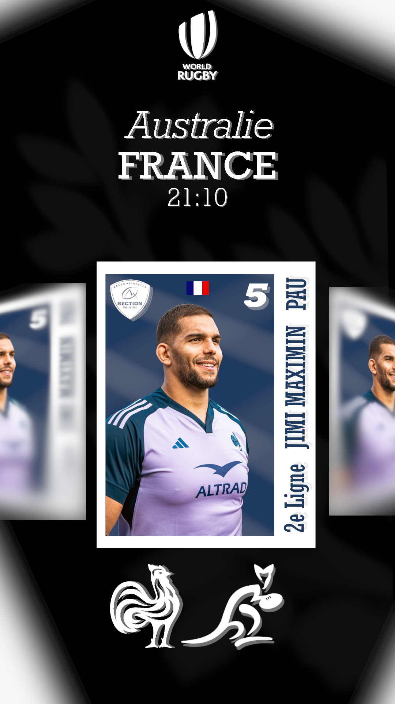
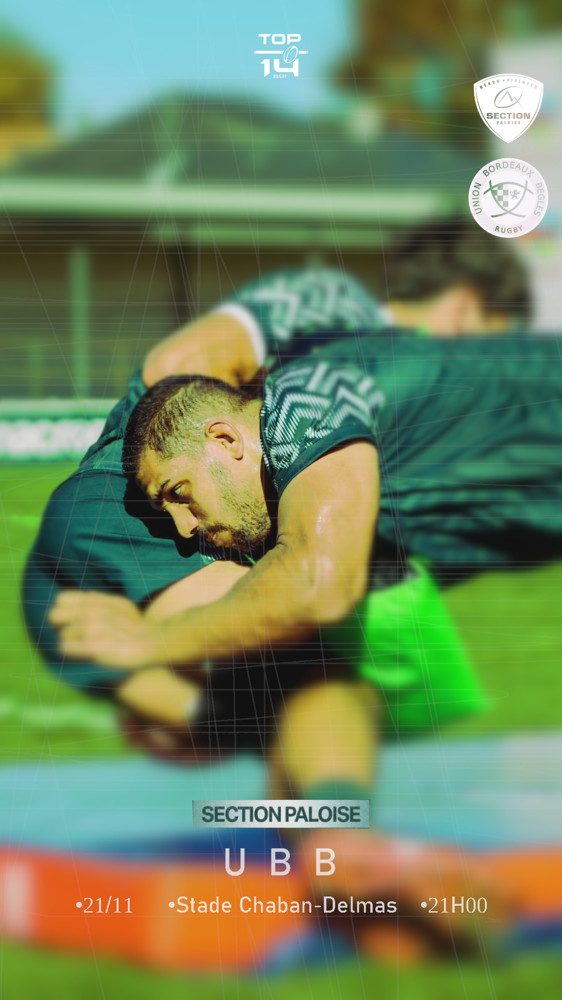
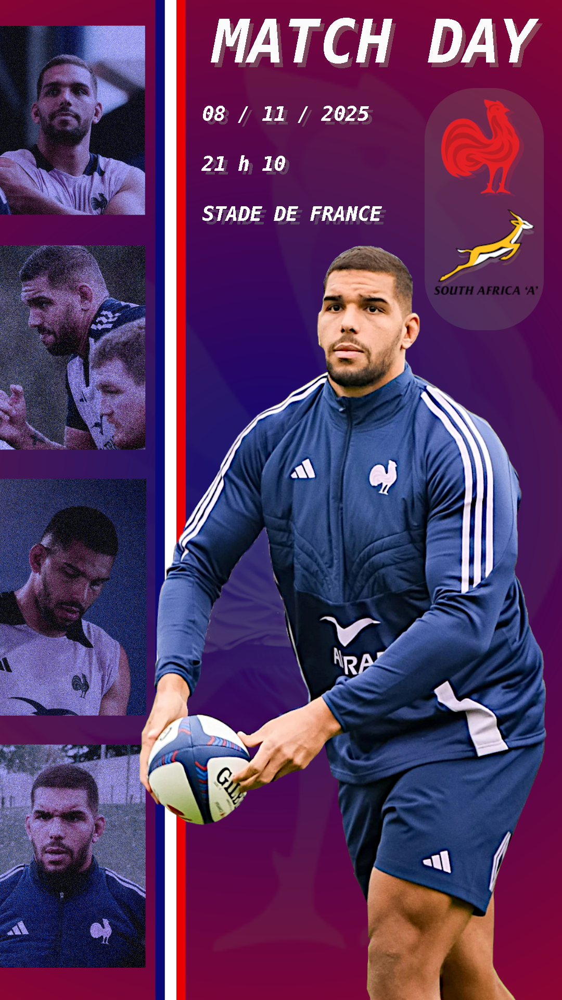
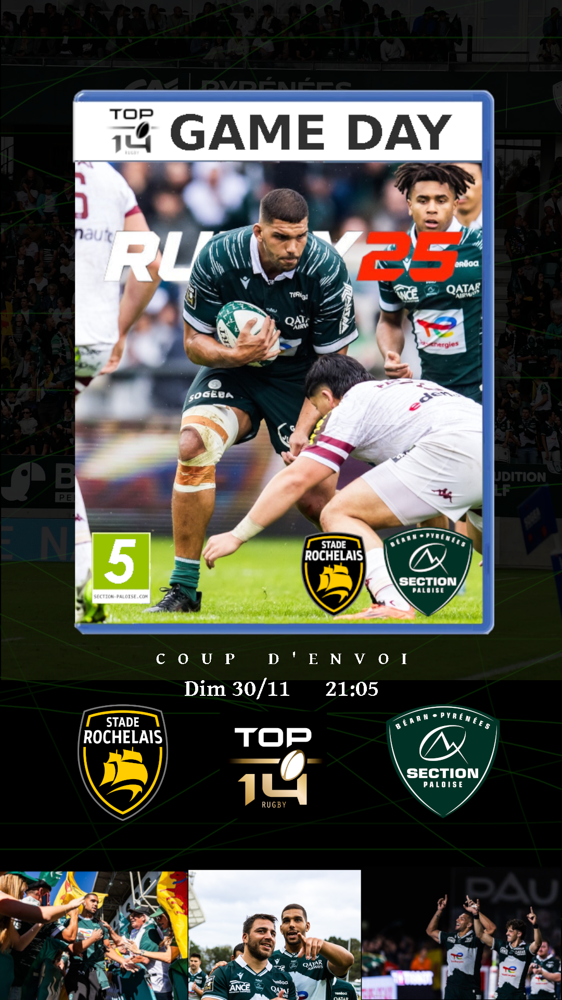
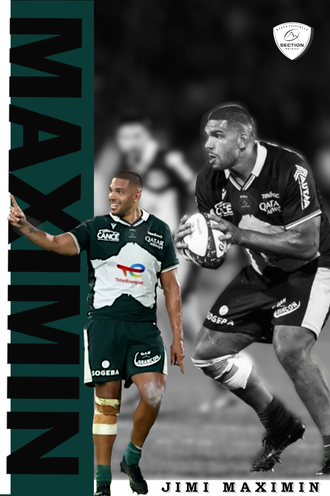
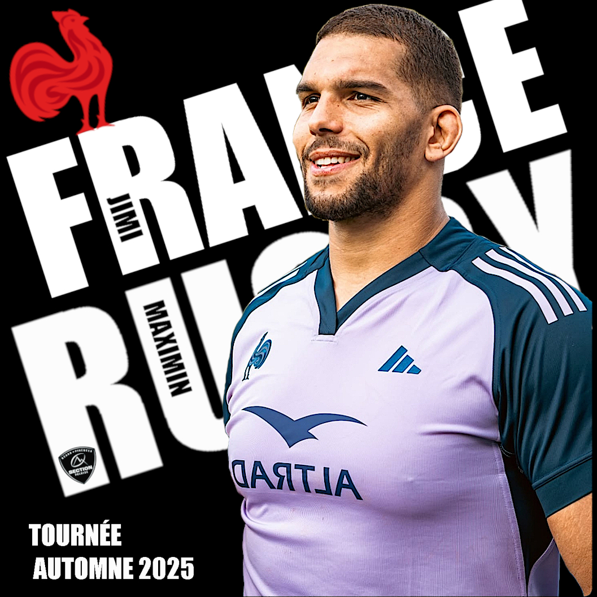

Contenu
Rugby
Création de visuels sportifs autour du rugby, pensés pour les réseaux sociaux : résultats, affiches et contenus visuels clairs et impactants, dans un univers encore peu exploité en design.
Le projet
Le rugby est un sport riche et intense, mais encore peu mis en valeur sur les réseaux sociaux avec un contenu visuel moderne et structuré. Ce projet consiste à créer du contenu graphique autour du rugby pour mieux le mettre en avant.
L’objectif est de produire des posts clairs et impactants : visuels, résultats, et contenus engageants adaptés aux réseaux sociaux. Chaque publication est pensée pour être lisible, esthétique et cohérente dans un feed.
« Mettre en valeur le rugby à travers un contenu visuel moderne et accessible. »
Types de contenu
-
Résultats & actualités
Publications rapides autour des scores et événements importants pour suivre l’actualité du rugby.
-
Contenu storytelling
Mise en avant de joueurs, clubs et moments marquants à travers des publications visuelles engageantes.
-
Visuels sportifs
Création de posts graphiques adaptés aux réseaux sociaux avec une identité visuelle cohérente.
Aperçu visuel





